# 准备工作
# 下载
可以在官网上下载 RocketMQ・官方网站 | RocketMQ (apache.org)
或者直接到 Apache 的文件站点下 Index of /dist/rocketmq (apache.org) 找到对应版本下载。
这里以编写时的最新版本为例，选择 Binary 版本下载，该版本为编译后的版本，可以直接使用。
Source 下载获取的是源码，需要经过编译后才可以使用，不过比较方便自行扩展，有扩展需求可以使用该版本自行编译。
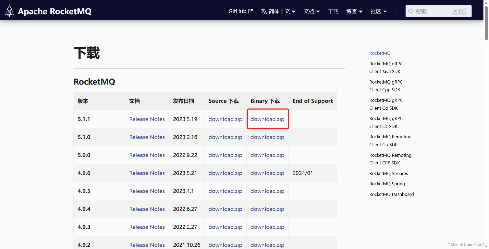
下载完成后解压出来是如下的文件结构。
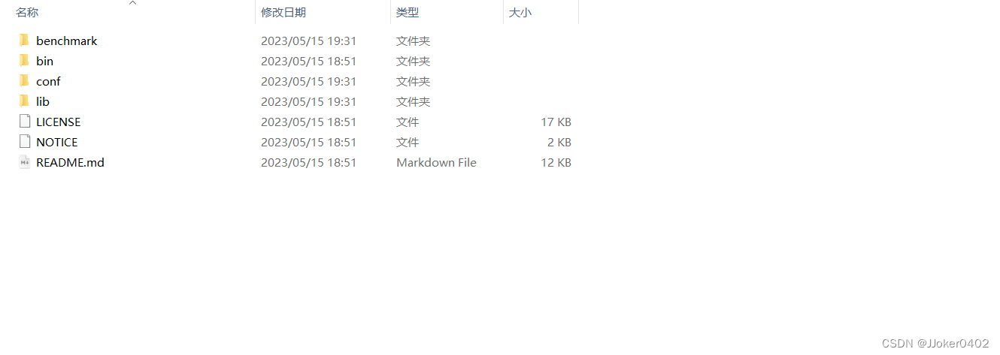
以下以 windows 为环境演示。
RocketMQ 依赖的是 Java 的运行环境，因此系统上应该安装 Java 并且拥有对应的环境变量 JAVA_HOME.
RocketMQ 使用的 java 环境是 java8，对于高版本环境可能需要进行一些适配性的改动。
在 RocketMQ 目录下的 bin 文件夹中有对应的服务启动脚本，包含 Linux 可运行的 sh 文件以及 Windows 可运行的 cmd 文件。
# 环境变量
解压完毕后需要手动添加名为 ROCKETMQ_HOME 的环境变量，索引到 RocketMQ 的解压目录即可，设置完毕后需要重启电脑。
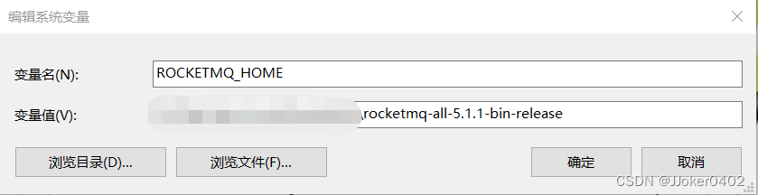
# NameServer
打开 cmd 命令行后，通过 cd 命令进入到解压目录的 bin 目录下。然后使用 start mqnamesrv.cmd 命令新开一个命令行窗口启动 NameServer
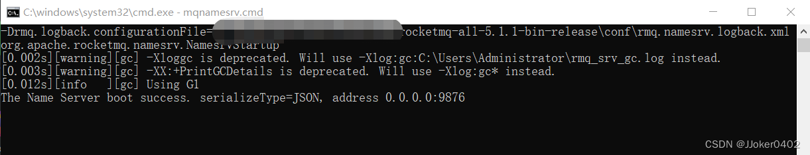
或者直接使用 mqnamesrv.cmd 在当前命令行中启动。
其本质是通过此前设置的环境变量找到 RocketMQ 的 bin 路径，再通过该路径下的 runserver.cmd 脚本文件实现运行的，因此启动项配置其实来自 runserver.cmd 中。
出现 The Name Server boot success 提示则表示 NameServer 服务启动成功，启动成功后不要关闭该命令窗口。
# 可能出现的问题
# Please set the ROCKETMQ_HOME variable in your environment!
这个问题提示其实不够准确，并不一定是在我们没有设置环境变量时出现。
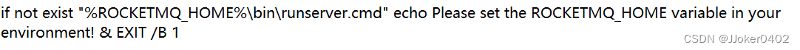
因为在运行过程中，脚本文件是通过环境变量来定位到 runserver.cmd 的位置再通过该脚本来启动应用的，因此在当 runserver.cmd 文件定位不到时才会出现该问题。
处理方法：可以重新打开一个命令行，然后通过 echo %ROCKETMQ_HOME%
打印一下环境变量出来检查一下环境变量是否有误。同时这种方式也能够让环境变量刷新，如果此前曾经修改过环境变量而没有重启电脑，则这种方式能够让环境变量刷新成修改后的值。
如果仍然没有解决，则可以进入到该对应路径下看看是否缺失了 runserver.cmd 文件，到这一步也都没有发现问题，那就只能重启一下试试，可能环境变量的更改并没有生效。
# Unrecognized VM option
在通过 runserver.cmd 运行时，如果以高于 java8 的版本作为环境运行可能会出现如下错误：Unrecognized VM option ’
UseConcMarkSweepGC’
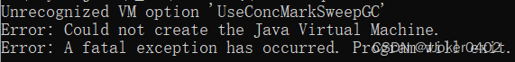
这是因为在运行脚本中，包含了一些对 CMSGC 的一些调优参数。
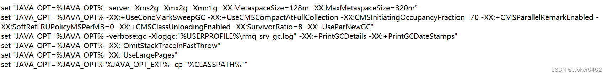
据查在 java9 中使用 G1 来作为 GC 的默认实现，从而废弃了 CMS 相关的一些参数。因此启动时需要进行一些相关参数的改动，或者将 java 降级，指定特定的 jre8 来作为虚拟机运行。
在 sh 版本的 runserver 脚本中对 java 的版本进行了专门的适配，可以识别 java 版本采用特定的指令。如果使用 cmd 脚本时仍需要在 Java 高版本环境中运行，也可以参照 sh 版本脚本修改一下对应的虚拟机参数。
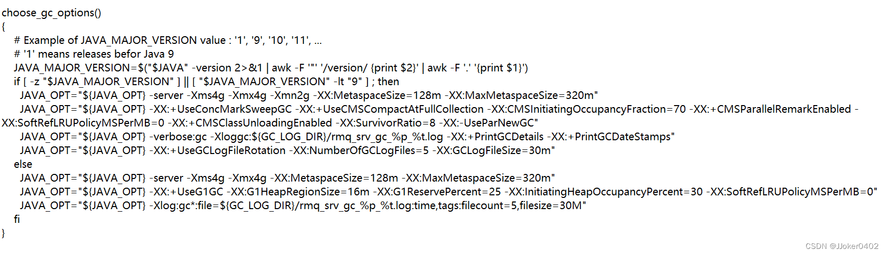
处理方法：这里提供一个根据 sh 脚本修改过来的适配高版本 java 的 cmd 脚本，使用高版本运行时用该脚本替代原本的 runserver.cmd 即可。
1 | @echo off |
为什么不对 cmd 脚本进行适配呢？
sh 脚本中的 java 版本适配其本质上，是通过运行 java -version 命令
获取到控制台输出的完整 java 版本信息。再通过字符串匹配的方式来获取 java 版本号，再去以 8 为基准去匹配对应的运行参数。
经过测试，windows 平台下的 java -version 获取到的版本字符串通过命令行是无法捕获到的。
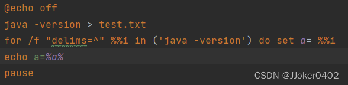
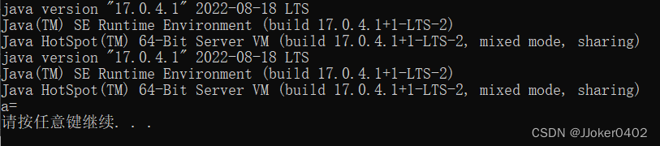
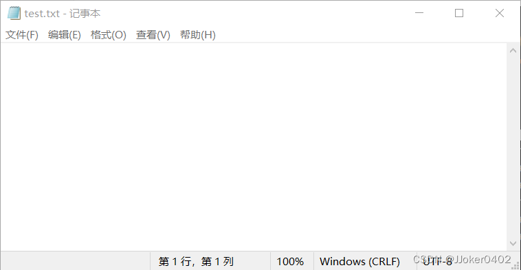
推测也就是这个原因 windows 导致没有办法单独通过命令行来确定 java 版本号，也自然就没有办法参照其进行适配了。
# 找不到或无法加载主类
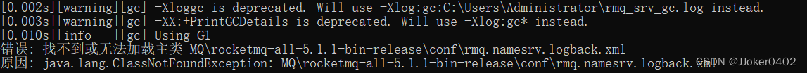
该问题的主要诱因是环境变量中存在空格。导致解析命令时环境变量被分割成了两个命令。
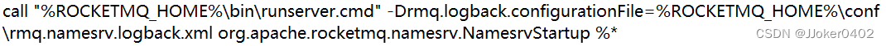
处理方法：最好的解决办法是变更目录，在 RocketMQ 的路径中不要存在空格。
还有，其实当命令中存在不需要被分割的空格时，只需要使用 双引号 "" 将对应的命令包裹起来即可。
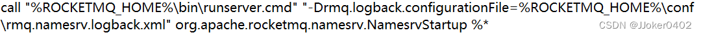
但是此处经过尝试后发现，该处被错误分割的情况消失，但是仍然存在问题，可能在 runserver 中的 BASE_DIR 与 CLASSPATH 等变量也需要加上双引号防止错误分割，解决起来较为麻烦，而且不清楚后续会不会造成其他问题，因此不再对这种情况进行处理。
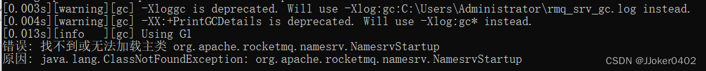
# Broker
# 启动
在启动前需要先添加一个环境变量 NAMESRV_ADDR，用来指向 nameServer 服务的地址。因为测试部署时服务部署在本机，所以使用 localhost 地址，加上此前默认的端口 9876 作为环境变量值。
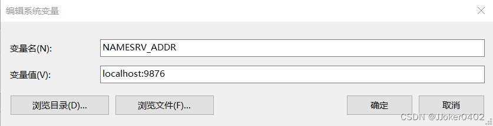
打开 cmd 命令行后，通过 cd 命令进入到 RocketMQ 解压目录的 bin 目录下，运行命令 start mqbroker.cmd autoCreateTopicEnable=true 启动服务。
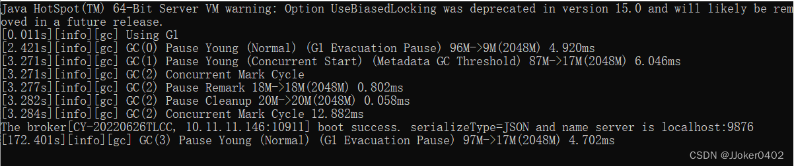
出现 The broker […] boot success 提示则表示 broker 服务启动成功，启动成功后同样不要关闭该命令窗口。
# 可能出现的问题
因为运行逻辑类似，因此也会出现上述情况类似的问题，此处不过多阐述，对照着修改即可。
关于 java 版本适配的问题，此处也提供一个高版本可用的运行脚本:
1 | @echo off |
用其取代 runbroker.cmd 即可。
# 导包问题
1 | java.lang.IllegalAccessError: class org.apache.rocketmq.common.UtilAll (in unnamed module @0x4bde3f8a) cannot access class sun.nio.ch.DirectBuffer (in module java.base) because module java.base does not export sun.nio.ch to unnamed module @0x4bde3f8a |
在启动参数中额外添加一句 --add-exports=java.base/sun.nio.ch=ALL-UNNAMED 即可.。
1 | "%JAVA%" %JAVA_OPT% %* |
更改为
1 | "%JAVA%" --add-exports=java.base/sun.nio.ch=ALL-UNNAMED %JAVA_OPT% %* |
# 控制台
上述服务搭建成功后服务就已经可用了，但是为了便于管理其中的数据，我们需要搭建一个控制台，用来提供一个前端页面供我们管理数据。
# 获取源码
在早些时候，控制台项目隶属于 GitHub - apache/rocketmq-externals
项目下，位于其中的 rocketmq-console 中，其中还包含一些其他的 RocketMQ 的拓展项目，可以参考使用。后来控制台项目单独独立了出来，我们可以在 GitHub - apache/rocketmq-dashboard
仓库中找到。
首先将其源码通过以下 git 指令克隆到本地。
1 | git clone https://github.com/apache/rocketmq-dashboard.git |
# 安装依赖
克隆完毕后因为还需要处理依赖，有条件的话可以直接使用 JAVA 编译器打开，使用 IDEA 导入为 maven 项目的话会自动加载依赖，其本质上就是 java
spring 的项目。如果依赖下载较慢可以使用阿里的 maven 仓库作为中央仓库，因为本来就是阿里的项目，应该不会存在依赖版本等的问题。
1 | <mirrors> |
不借助编译器处理依赖的话可以 cd 到项目目录下，自行使用 mvn 的指令去处理依赖。
# 启动
在依赖安装完成之后，在运行之前先要修改一下配置。其实配置项的功能描述在 application.yml 中都有，没有的大多是 spring 的基本配置，查 spring 对应的配置项即可。此处只包括影响到应用启动的配置。
# 配置 NameServer 地址
在 application.yml 中，需要配置一下此前的 NameServer 的 ip 地址，因为源码中的配置文件中 NameServer 地址配置多了一个 127.0.0.2:
9876 地址，运行过程中连接不上可能会报错，删掉即可。
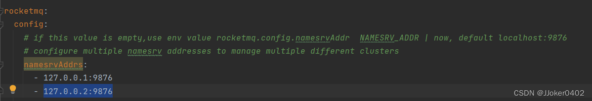
此处可以配置一个，也可以配置多个，使用 yml 的数组写法即可，即在每一项数组元素均使用 “-” 开头。
如果在 properties 文件中数组则是类似于通常数组的写法，只不过每个元素都要单独写一项，比较麻烦。
1 | rocketmq.config.namesrvAddrs[0]=127.0.0.1:9876 |
# 配置启动端口
也可以配置一下当前控制台的启动使用的访问端口，随意一个空闲端口即可。
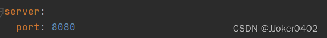
# 启动
使用编译器启动，通过 mvn spring-boot:run 启动或者通过 maven 打包成 jar 包然后运行 jar 包均可，运行成功后如下图。
# 部署
部署时可以参照传统的 maven 项目进行打包部署，另外官方也提供了 docker 镜像来便捷部署，根据 ReadMe 中描述，通过以下 docker 指令拉取 docker 镜像。
1 | docker pull apacherocketmq/rocketmq-dashboard:latest |
然后通过以下指令修改参数后运行即可
1 | docker run -d --name rocketmq-dashboard -e "JAVA_OPTS=-Drocketmq.namesrv.addr=127.0.0.1:9876" -p 8080:8080 -t apacherocketmq/rocketmq-dashboard:latest |
其中 rockermq.namesrv.addr 的值为此前部署的 NameServer 的地址，-p 参数冒号前的值为应用在虚拟机中的启动端口，后面的值应该映射到宿主机开放给该服务的端口。
# 访问
启动后通过部署的 ip+port 端口的形式访问即可。
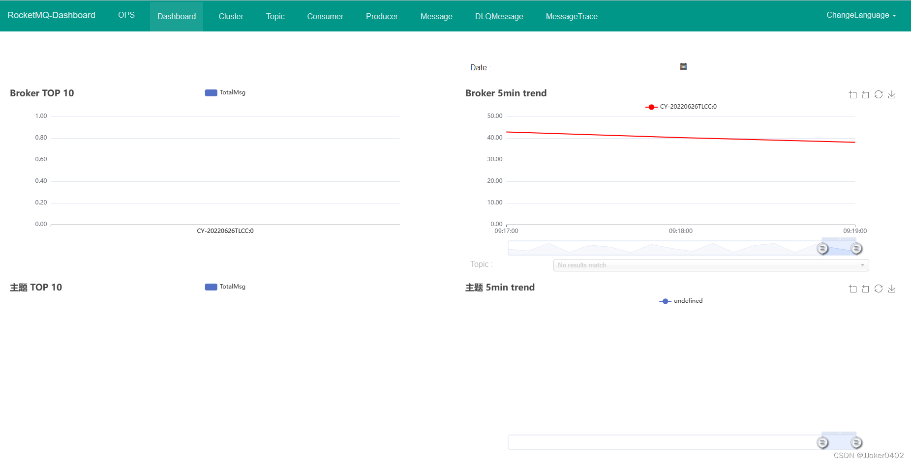
需要中文界面的话可以通过 ChangeLanguage 来切换语言。
多语化文件放置在源码目录下的 src/main/resources/static/src/i18n 文件夹中，可参照前端的 i18n 标准自行修改翻译或者添加其他语言。
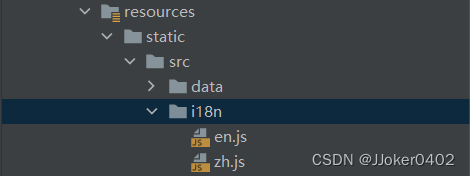